第17章 第一部分总结
在第1章刚开始进行股票技术图表分析时，我们讨论了技术分析法背后的理念。读者可以翻到该章回顾这个主题。（本章图解参见图17-1～图17-4。）
在详细研读丰富且有趣的股票图表时，我们难免会忘记，它们只是我们用来衡量供求力量对比的工具，而且还不完美。而真正决定股票走势、涨跌快慢及幅度的是供求力量对比本身。
请记住，在这当中，供给和需求的成因并不重要，重要的是两者的存在和平衡。没有任何个人或机构能够准确地估算所有的数据、情绪、个人需求、期冀、恐惧、揣度和猜测，而这些因素其中之一稍有变化都可能引起整体供求关系的变化，所谓牵一发而动全身。而这些因素的总和则可以立即反映在市场中。
那么，技术分析的任务就是解读市场本身，即供给和需求所反映的内容。要完成这个任务，图表就是最佳的工具。但也别高兴得太早了，要读懂图表，你要密切关注每日波动的细节，并不断地问自己，这到底代表供需关系的什么变化。
你必须具备判断力和观察力，此外还需要不断地温习基本原则。我们一直强调，图表并非完美的工具；它不是机器人；它不会简单、快速而肯定地给出所有答案，并帮助投资者立马获利。
我们尽可能地检查并验证过无数本书没有讨论的技术理论、系统、指数和工具。之所以没有把它们都纳入本书，主要是因为它们都企图用纯机械的方式去解决并非纯机械的问题。而本书所呈现的图表分析方法则是那些被证明最为有用的方案，因为它们相对简单，且大部分都很容易推导，一直遵从基本原则，不会导致过高的预期，互为补充，相得益彰。
让我们来简要回顾一下这些方法。主要有四类。
（1）价格波动的区域形态及伴随的成交量显示出供需平衡的重大变化。这些形态有些预示整固，即股价在一段休整之后再次发力朝此前的方向前进。有些预示反转，即形态形成前主导的一方力量衰竭，另一方胜出，导致股价走势反转。以上两种情况都会积聚力量推动股价或涨或跌，并带来盈利机会。有些形态还会预示股价的目标位。这些图表形态辅以成交量给技术分析师提供了主要的“入场”和“离场”信号。
成交量在本书并没有与股价分开来作为一个专题讨论，其自身也不构成一个专门的技术风向标，但是，我们还是需要再讨论一下。请记住成交量是一个相对的概念，成交量在牛市顶部时往往比在熊市底部时更大。成交量一般会“追随趋势变化”，也就是说，上涨时成交量会放大，涨势回调时成交量减少，反之亦然。但是，请小心地使用这条规则；不要仅依赖短期数据，请记住，即使是在熊市中（恐慌性抛盘除外），当股价上扬时成交量也往往会有小幅增加。（股票涨起来需要买盘推动，跌起来却像自由落体。）
成交量如果比数日或数周前明显放大，可能表示一段趋势的开始（突破）或结束（顶点），这可能是阶段性的，也可能是最后的。（也可能表示主力震仓，但比较少见。）成交量的意义应该配合股价走势来看。
（2）趋势和趋势线研究是区域形态研究的补充，用来判断股价的基本走向，探测方向的转变。尽管趋势和趋势线的定义不像区域形态那样清晰，但是常常可以用来判断短线交易的进出，且可避免过早地获利了结。
（3）支撑位和阻力位形成取决于此前的交投情况。它们可能会对何时建仓有指导意义，但其更重要的技术意义在于预示趋势将要放缓或终止，预示在什么价位股票会突然遭遇大量供给或需求。
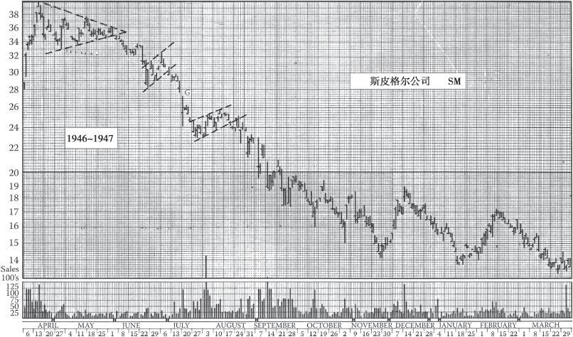
图17-1 斯皮格尔公司的跌势始于1946年4月形成的一个对称三角形，后来演变成一个下降三角形。请注意6月的一次反抽和两个旗形。后续走势请参阅图17-2
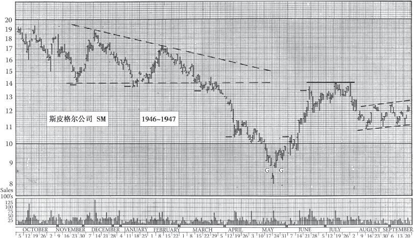
图17-2 本图前半部分与图17-1重合，展示了1947年年初的大下降三角形完成后的股价变化。如图所示，5月19日这一天股价触底反弹。请注意图上的多个短线及中线阻力位
在交易前，既要看前期形态来判断走势的强弱，又要看支撑位和阻力位的历史来观察股价是否能轻松达到一个可获利的价位。支撑位和阻力位研究在提供“获利了结”或“换股”信号时特别有帮助。
（4）大盘环境和道氏理论一样不容轻视。尽管道氏理论给出的信号有些“晚”，也有些缺点，但仍然不失为技术派工具箱中的宝贵工具。
大牛熊周期中不同阶段的特点（见本书中有关道氏理论的章节）应该铭记于心。这又回到了我们在本章伊始强调的观察力 ，这是成功的技术分析的要义。不随大盘而动的股票极为罕见。很多投资者亏损，是因为他们在牛市的最后疯狂阶段买入，并在需要用钱的时候，或是熊市中割肉卖出。
因此，持续观察大盘走势非常重要。对于个股而言，经济大环境是影响供求关系最重要的元素之一。对抗真正的趋势从来都不会有好结果。
历史上，长线牛熊市都以较为规律的形态交替出现。我们可以预计，只要现行体系不变，长线牛熊市将会继续交替出现。我们要牢记，股价越创新高越要谨慎，而在股价跌至新低时买入往往会带来好的结果。
常常会有人告诉你图表分析师（比如说道氏理论的追随者）往往是“马后炮”，因为等图表分析师买入时，股价往往已经涨了一段时间，那时“快钱”可能早就完成了吸筹，而当他们开始卖股票时，趋势已明显转熊。从某种程度上说，这是事实，你可能也已经发现了。但成功的秘诀并不在于买在最低点并抛在最高点，而在于避免大额损失 。（有时根据市场情况，你必须尽快割肉，避免更大的损失。）
华尔街曾出过一名成功的操盘手，他后来成为受人敬重的巨富。他曾说，在自己的职业生涯中，从来没有在底部的10%内买到过，也没有在顶部的10%卖出过！（编者按：这位操盘手就是伯纳德·巴鲁克（Bernard Baruch）。）
在结束本书的理论部分并开始第二部分应用技巧的内容前，我们想再给大家一条忠告：技术分析并非要求投资者一直持仓，也不保证每天都会发生点什么。有时（可能长达数月）对于保守的投资者来说最好的策略就是离场观望。市场也未必会如分析师预测的那样走完某个形态。市场有自己的运行方式。耐心永远都是一种美德 。
17.1 21世纪的技术分析和科技工具：计算机和互联网引导的投资/信息革命
下文主要介绍计算机和信息技术对技术分析来说究竟意味着什么。
约翰·迈吉在马萨诸塞州的斯普林菲尔德有一间办公室，办公室内设有一间专门用于图表分析的小房间。在他那个时代，这间小房间里常常挤满了各个年龄的分析师，有十几岁的新手，也有年过半百的老手。他们的工作就是制图，并协助迈吉解读图表。他们曾经阐述过不少精彩独到的见解。本书介绍的手工制图法也是他们发明的。
如今，这个小房间和这些分析师都被一个放在桌上的方盒子取代。人们常常把它看作智慧和洞察力的源泉：“计算机，为我分析股票吧。”
遗憾的是，计算机并不能像分析师那样区分和判断形态。虽然信息技术有这样的弱点，但投资者仍然在开发计算机辅助功能上倾注了大量的时间和金钱，希望借此找到成功的秘诀。虽然很多投资都白费了，但也不是完全一无所获。在某些领域，计算机相关技术成效显著。但是，在寻找股票交易的秘诀上，却没有发现什么万无一失的算法。
要完全理解计算机的重要性，读者首先应认识到不同的交易方法之间的基本差异。我们也可以称之为分析师和投资者的不同流派。我们在这里不考虑基本面分析师，因为他们的研究角度和技术分析师完全不同。图表分析师，或者说迈吉式的技术分析师基本上都是通过解读柱状图来分析市场的。（这并不是说他们就应该摒弃其他信息来源了，相反地，他们应该接受任何有用的信息。）有的图表分析流派使用圈叉图，还有的用K线图。此外，还有一派技术分析师使用基本市场数据，也就是股价和成交量，建立统计程序来计算一切，例如移动平均线，或是%R、布林通道线（见术语表）这类神奇的指标。这个流派叫统计分析派或数据分析派。上述所有分析师都在交易股票和其他金融工具时（不包括期权）使用了某种技术分析方法，也就是说，他们在分析时使用的都是硬数据，即无法谎报、歪曲、操纵的数据，和基本面分析师所用的数据（如盈利、现金流、销售额等）大相径庭。
使用统计分析法或数据分析法的分析师和图表分析师一样，试图预测市场趋势，发现交易机会。这可能十分困难，因为股市和债市都是人类行为的体现。换句话说，人类情绪是股价变化的一个影响因素，甚至可能是最重要的变量。而人类的情绪和行为，不论狂热还是抑郁，都没有得到量化。但一些图表分析师认为自己可以通过图表的变化辨识出市场情绪。
在另一个领域，计算机获得了更加引人注目的成果。但这个领域是模型驱动的期权市场。在期权市场中交易的量化分析师和技术分析师属于完全不同的派别。讽刺的是，虽然股市是一个受到情绪影响的市场，但这个市场却是衍生品的基础，而期权的价格是通过期权定价模型决定的。量化分析师和本书编辑都认为，投资者完全可以通过量化分析在期权市场中大获成功。期权交易老手的实战经验也充分印证了这一点。
但是，股票交易就没那么简单了。股价和数学没什么关系，仅有的关系就是股价是以自然数表示的，而且未来股价趋势也不容易预测。不论是迈吉的图表分析方法还是其他的技术分析、基本面分析甚至是心理分析都无法轻松预测股价趋势。（理论上说，基于图表分析的每一笔交易都应看作对于某种可能性的检验。但如果趋势并未按照预测发展，那么这种检验很快就终止了。）事实上，图表分析不容易被机械化这一点非常重要，这也是图表分析会持续有效的原因。正因如此，计算机很难生成应对策略，除非是所有人一望即知的情况，比如一个重要的大支撑/阻力位，或是一个明显的图形形态。现在，所有人都看图表，不论他们相不相信图表的实际作用。当市况明朗时，有人会试图推高或压低股价，让股价击穿某个重要点位，利用波动性和市场混乱赚钱。事实上，从杰·古尔德（Jay Gould） [1] 和吉姆·菲斯克（Big Jim Fisk） [2] 的时代到现在，人性并没有改变多少。
当股价被操纵时，假信号就会出现，比如牛市和熊市陷阱。有趣的是，信号失效本身可能成为一个可靠的信号，但它所预示的趋势方向和原信号预示的方向相反。
17.2 计算机技术的重要性
作为一项强大的工具，计算机也许是人类自莎草纸以来最重要的发明。（现在有无数计算机软件可执行下文所述的功能。）虽然计算机不能自动识别获利机会，但它有许多用处。
对于运用迈吉方法的分析师来说，计算机最重要的功能或许就是自动完成许多烦琐的工作。有了计算机，数据可从数据库服务器下载，图表可即时调用，投资组合的核算与维护、税务等都可轻松处理。因此，技术分析师可利用计算机极大地提高组合分析效率。本书附录B“资源”中列举了布莱尔·哈尔（Blair Hull）和期权研究公司（Options Research Inc.）等专业交易商所用的复杂组合分析工具。一般投资者可使用更简单的在线或商业软件，其网址和名称已在附录B“资源”中列出。
计算机的另一项功能是以多种不同方式（圈叉图、K线图、收盘价线图等）呈现基本数据。这些图表在计算机上很容易获取，有助于投资者了解市况。成交量、移动平均线等重要信息的量化分析也变得简单易行，计算机可轻松显示50天及200天移动平均线。许多市场参与者（甚至基本面分析师）非常重视移动平均线，而移动平均线分析应与图表分析相结合。
但（那些名称古怪的）随机指标、布林通道线（Bollinger Bands）、威廉指标（%R）、平滑异同移动平均线（MACD）、移动平均线（普通、指数、交叉等）、量价背离指标、相对强弱指标RSI（普通、怀尔德型）、量价趋势指标（VP Trend）、趋势趋同指数（TCI）、能量潮指标（OBV）、上下通道线（Upper/Lower Trading Bands）、ESA通道线（ESA Trading Bands）、AcmDis指标等，它们真的有用吗？我们认为，尽管它们看上去像炼金术，但有时还是有用的。并且，每一套方法都至少在两种情形下运行有效：一种是在其自身的研发过程中，另一种是在大牛市中。这些量化指标流行的时候，也正是交易天才最可能崭露头角的时候。（第9版编者按：一件工具的发明者通常能很好地使用它，但别人未必能。）
这些指标所创造的大量技术信息也可能像泛滥的基本面信息一样，蒙蔽投资者的双眼，使其无法判断哪些对于交易活动来说是真正重要的。量化技术分析是有用的，但其自身无法理性地判断市场状况，只有人类的思维能做到这点。毕竟，量化技术分析模型不考虑裙子长度、月亮盈亏、太阳黑子、经济周期、股市牛熊等（如果还存在熊市的话）。（第9版编者按：这是在21世纪初市场崩盘之前写的一句颇有讽刺意味的评语。）最后，人脑仍是唯一能够综合考虑所有这些量化及非量化信息、对无法量化的因素进行评估的器官。训练有素的头脑仍是辨别形态及其背景的最佳利器。
小结1
计算机是强大的工具，但毕竟只是工具，而不是有思考能力的问题解决者或决策制定者。就像挖掘机可用来挖掘，但不具备判断该在哪儿挖掘的能力。
对于前面提到的众多指标与方法，我们应保持一定的怀疑，并在图表分析的基础上进行评估。有时某一指标或技术对于某个使用者或其发明者有用，却会误导其他人。
所以，经验丰富的投资者会采用尽可能简单的分析方法与技术，并且只采用自己完全理解的方法、技术或指标。最重要的是，他会依靠自己的观察与经验来评估自己和别人的交易技术。
17.3 其他重要的科技发展
对技术派投资者来说，计算机并非唯一的重要科技发展。许多革命性的信息科技同样重要，包括互联网及其相关设施、电子化市场、金融与投资理论及方法的进步等。
关于这些主题已有大量文献资料，此处不再赘述，这里仅就怎样分析重要信息给出一些指导。想深入研究的读者可参考附录B“资源”。
但首先，科技发展是否已经淘汰了图表分析技术？否。科技发展是否已给交易成功带来保障？否。唯一可以确定的是，一些推销者会振振有词地说自己掌握了必胜之道，而听信他们的人会为自己的天真付出代价。
17.3.1 互联网：现代世界的第八大奇迹
（第9版编者按：第9版的附录B“资源”已经过显著扩充，对现代投资者有很大价值。）
互联网被称为人类有史以来最复杂的工程，此言不虚。人人都能用互联网做一些事，特别是投资者。投资领域的各类参与者都建起了网站，等候网民“自投罗网”。这些参与者包括券商、投资顾问（技术分析和基本面分析）、报纸、杂志、掮客、公募基金、公募基金顾问、评论家、数据库提供商、聊天室组织者、电子化市场及交易所、交易所债券（ECN）等。
面对如此纷繁复杂的资源，我们怎么梳理它们？运用电子或网络工具的投资者还可享受下列服务与便利：报价与数据、组合管理与核算、在线互动绘图、手机等移动设备的自动提醒功能、分析与建议、电子化行情室、电子化交易所等。附录B“资源”对这些内容有具体介绍，而本章只讲理念。知道这些形形色色的服务与便利是一回事，清楚其内容的重要性和优先性则是另一回事。如果你每周才对资产组合进行一次检视，那么实时报价对你有什么意义？卫星通信和实时行情对长期投资者有什么意义？投资者如果没有理念、不掌握方法，就很容易陷入电子技术的大漩涡，最终损失惨重。
所以投资者要冷静、审慎地观察这些产品与服务。归根结底，投资者需要的是数据 、图表 以及与交易所的对接 。如今在计算机上，数据和图表唾手可得，下单交易也非常方便。附录B“资源”里链接的网址对这些操作也有具体介绍。交易一般需要通过券商来进行，可以是电子券商甚至电话券商。与你斗智的也许是计算机，而非做市商或场内经纪人。
进入21世纪后，券商还能存在多久已是一个问题。（其实，合格的券商将永远受欢迎，不会消亡。）不需要券商或场内经纪人、让投资者直接接触的电子化市场正在兴起（见附录B“资源”），它们的初始阶段势必伴随着混乱、风险及机会。
无论是发给电子化交易所，还是发给纽约证券交易所，电子指令都比口头指令有优势。口头指令会出现差错乃至争议，而电子指令不会。此外，下达电子指令的交易员只需处理一次数据，无须在分析后打电话给券商、记录交易、再传送给组合。他只需敲击交易按键，指令就能通过软件传送，没人会怀疑其中可能有差错。相比之下，手工操作的每一步都可能产生差错，将严重影响交易活动。
计算机使交易过程变得更方便、更高效，例如自动处理交易、避免混乱与差错、保留审计轨迹、自动维护组合、自动执行组合的逐日盯市。（逐日盯市指按当前市价对资产组合进行估值的制度。）
17.3.2 盯市
如果不是因为措辞太过俗套，本书或许可以被命名为《禅学与技术分析的艺术》。书中表达了禅的含义，即与现实的直接关联和对当下的重视。约翰·迈吉在其重要著作《股市通用语义学》（现改为《股市心理博弈》 [3] ）中用较长篇幅对一厢情愿的“两本账”式记账思维进行了抨击——一本账记录盈利，包括已实现和未实现的盈利；另一本账记录亏损，但只包含已实现的部分，未实现的亏损在确认前不算亏损。电子组合财务系统并未采纳这种自欺欺人的思维，因而值得推崇。如果组合通过计算机与数据提供商和券商进行交互，持续盯市，则很难掩盖亏损，账户的权益也能充分体现所有已实现及未实现的交易结果。
17.3.3 去粗取精
现在，形形色色的电子化投资和量化技术分析充斥着市场，投资者需要具备甄别能力。不负责任的投资、对权威的盲从以及敷衍了事的“研究”都可能巧妙地伪装成赚钱的交易，蒙骗投资者。其实，迈吉派分析师们在研究中必做的事项在本书中都有阐述。
17.3.4 糟粕
这包括各类聊天平台、推销信息以及新闻、预测、专家观点、券商股评等。切记券商以卖券为生，并主要通过交易活动赚钱。实际上，券商主要通过服务机构客户并将客户的股票卖给散户赚取收入——这一明显的利益冲突在21世纪初令诸多券商引火上身，吃了不少罚单和牢狱之灾（现在依然如此……）。在20世纪90年代克林顿和小布什当政时的牛市期间，券商的观点都很奏效；但在大熊市期间，却无一应验。（第9版编者按：2000年开始了一波大熊市，当时迈吉图表分析准确地识别出了这轮熊市，相关研报可参见网址：http://www.edwards-magee.com.）
17.3.5 小结2
个人投资者在当今市场中拥有比以往多得多的工具。计算机可以帮助人们利用这些工具。
通过互联网，人们可以轻易地以低成本或零成本获取想要的数据。
互联网为投资者提供了海量的信息，人们可以通过移动设备及时了解自己组合的情况，系统也会及时推送各类提示。
实时的数据更新也可能令缺乏经验的交易员瞬间破产。各类网站的分析方法也是五花八门，有正统的技术分析（通常过于复杂），也有别有用心的怪招。
聊天工具也为实时营销打开了大门，成了诸多谣言的温床，缺乏独立判断力的投资者往往会掉进陷阱。
值得一提的是，信息革命和计算机为我们带来了以下变革。
（1）分析师的工作效率大大提高：数据收集、图表制作、组合核算、分析及税务编制等各个环节的手工操作显著减少。
（2）分析师可以轻易获取组合核算信息和盯市价格。
（3）信息处理能力达到了前所未有的高度。计算机能分析的股票数量没有上限，本书第21章“选择要跟踪绘图的个股”中对如何利用计算机来选股进行了阐释。
（4）电子系统或电子交易市场避免了价格操纵。
17.4 投资技术的进步，第一部分：金融理论和实践的发展
尽管互联网和金融市场充斥着各种恶意和无用的创新、服务及产品，但现代金融理论和技术对普通投资者来说仍然意义重大。本章将向初级或略成熟的投资者介绍必要的理论和实践方面的进展。有兴趣的读者也能在本章中找到深入学习所需的资源。
在爱德华兹和迈吉时代，有些投资工具还十分少见（甚至尚未面世），比如交易所股票期权、指数期货、期货和指数期权以及指数的证券化产品。毫无疑问，当今重大发展之一就是创建了一系列用于对主要指数进行交易和对冲的交易工具。其中，芝加哥交易所（CBOT）创建的工具尤其值得一提，它们分别是CBOT道琼斯工业平均指数期货（CBOT DJIA Futures）和CBOT道琼斯工业平均指数期权（CBOT DJIA Futures Options），本章最后将对其进行详细的阐述。（第9版编者按：相比之下，本书中更值得一提的是美国证券交易所ishares基金，特别是思柏达道琼斯工业平均指数交易所交易基金、标准普尔500指数交易所交易基金、纳斯达克100指数交易所交易基金，这些工具类似股票，可以让投资者有机会直接参与到主要股指的交易中。）
下文介绍了金融理论和实践的重要发展历程。
17.4.1 期权
自1973年费希尔·布莱克（Fischer Black）及其合伙人迈伦·斯科尔斯（Myron Scholes）共同推出期权定价模型以来，期权和衍生品市场的规模从过去的微乎其微增长到现在的每年万亿级别。期权也从过去的新生事物变成了如今的重要工具。当然，以上并非本书的主要内容，本书旨在就以上课题提出观点和指引，以方便广大交易员和投资者进行深入研究。
大约30%的期权到期时未能实现其价值，记住这一点至关重要。（经验表明期权通常遵循60-30-10比例法则，即60%的期权在到期前平仓，10%被行权，剩下30%则到期失效。）关于期权的另一个事实是，在1987年里根总统任期内的股灾中，如果在当年10月16日以0.625美元购得价外认沽期权，则10月19日该期权的价值会飙涨到上百美元。（编者在期货研究公司的一位客户当时在3天之内损失了5700万美元，这一金额足以令一家大型的芝加哥银行倒闭。这位客户当时卖出了过多的无备兑期权。）
全球顶尖的交易员将期权交易作为他们的主业（他们因此过上了十分富足的生活），而确切的估算表明，90%的散户期权投资者根本赚不到钱。读者由此可以推断相当一部分的期权是被散户买走（而非卖出）的。
基于这一点，让我们从普通投资者的角度对期权做个分析。期权有几大功能，可为交易者带来巨大的杠杆。相比直接购股，利用期权，交易者可以控制更多的股票，以小搏大。有些期权甚至被视作投机的利器。（投机工具的常见特点便是过度放大的杠杆。）当然，期权也有保障的功能，作用如同保单，比如多头一方可以通过购买认沽期权对冲未来风险。
老道的投资者也会通过期权来提高其证券组合的收益率。通过卖出持保认购期权或就一只股票出售裸期权（covered put）以期在未来以低价购回（例如卖出价外认沽期权，就是一种多头的策略。如果股价回到行权价位，便可买入；如果未达到行权价位，投资者则赚取了期权费）。
诸如此类的期权玩转技巧还有很多。请注意，这里强调的是“玩转”，意味着对普通投资者来说，期权游戏可能会让玩家血本无归，而真正的行家是不会这么冒失的，专家靠的是严谨的操作。许多场内交易员智力超凡却缺乏常识——他们可以在大脑中计算出期权的“公允价值”，而赚钱的机会则取决于1/16概率的价格异常，或者用他们的行话叫作“小钱”。在本书编者与某位全球知名期权交易员的对话中，该做市商曾调侃道，他的财富正是源于这些小概率的“小钱”。可想而知，普通投资者要想通过1/16的价格异常来赚钱恐怕是行不通的。（第10版编者按：通过利用电子定价，做市商和专家可以在理论上将利差缩减到0.01美元，从而更加灵活地打败投资者。）
但这并不意味着普通投资者应该远离期权，而是意味着在玩转期权之前应做好充分的准备。期权交易中，交易者时常提及牛市价差、熊市价差以及鳄鱼价差。鳄鱼价差策略会令投资者的价差收益被佣金全部吞噬。
下面我们来具体谈一下备兑卖出认购期权策略。该策略号称是股票组合的创收利器。多头投资者无意出售股票的认购期权——除非该股票在期权到期前仍处在明显的盘整阶段。如果股价呈下跌趋势，则该股票应清仓。但在明确的上升趋势下卖出认购期权则对券商有利，因为这会带来可观的交易活动和佣金收入。对于股价处在上升阶段的备兑认购期权来说，期权卖出方拥有行权时的股票，却不得不平仓，从而错失未来股价上涨带来的收益，当然还有交易成本。与有限的收益相比，较高的成本会侵蚀利润，着实不划算。然而，备兑期权有其存在的价值，在某些情形下仍可创造利润。
17.4.2 量化分析
投资者应该知道，在另一个领域，也就是由模型驱动的期权市场，计算机技术已经帮助投资者获得了丰厚利润。研究并交易期权的量化分析和技术分析是截然不同的。但有趣的是，由人类行为决定的市场，比如说股市，正是衍生品（包括期权）的基础，而期权价格基本上是由一套算法模型决定的。最初开启了现代期权交易的模型是布莱克-科尔斯期权定价模型。该模型认为，将行权价、股价、无风险利率、到期日和股票波动性这5个参数代入一个公式，即可确定期权的“公允价值”。
该模型已被广泛接受，从而形成了我们今天熟知的衍生品市场。如果要列出今天可供交易的所有衍生品，那么本书要增加很多页，况且这也不是本书的目的所在。我们提及衍生品，只是想提醒那些意图“打败衍生品市场”的投资者，在交易衍生品前，他们必须接受严格的培训，否则将会付出高昂的代价。
一开始，一部分专业投资者认识到了该模型的重要性并将其运用于期权定价。他们从其他专业投资者以及大众身上赚了不少钱，因为后者在交易时全凭直觉，也就是人的情绪。而专业投资者一旦亏了钱，就会迅速吸取教训。现在几乎所有称职的期权交易者都会使用某种模型、“反模型”或“反模型的反模型”来进行交易。结果我们看到，期权卖方（基本都是专业交易者）现在都从普通投资者（期权买方）身上赚钱。这个世界就是这样。
17.4.3 期权定价模型及其重要性
除了上文介绍的布莱克-斯科尔斯期权定价模型，期权市场还有众多其他模型，比如二叉树期权定价模型、布莱克期货模型等。如果普通投资者想要交易期权，那么应该熟悉这些模型及其功能。请记住这些模型计算的是期权的“公允价值”。专业投资者从业余投资者身上赚钱的方法之一就是低买高卖，赚取一个较小的价差。对于散户投资者来说，不知道期权的价值是多少就如同不知道现在的股价是多少一样。这样的无知注定会被专业投资者利用。遗憾的是，无数散户一次又一次地交学费却从没有学到什么。无知的代价是昂贵的。
科技和知识从来都是自创新和变革的引导者开始，然后传递到专业人士，最终被普罗大众接受。到最后这个阶段，创新和变革者已经研发了新的技术。即便专业人士拥有更先进的工具及技术，普通投资者也要不断学习，附录B“资源”中列出了一些参考资料。
对于想深入学习期权交易的投资者，我们推荐一本专业书籍：劳伦斯·麦克米伦（Lawrence MacMillan）撰写的《期权投资策略》 [4] （Options as a Strategic Investment）。此外，期权交易的新手还可以通过http://www.cboe.com 联系芝加哥期权交易所获取教学软件。
17.4.4 指数期货
期货与期权一样为投机者带来了高杠杆的机会。相较于直接买卖大宗商品或指数，通过期货，投机者能以更少的资金控制更大的仓位，以小搏大。期货交易者津津乐道的是：如果你的杠杆率是合同价值的5%或10%，那么和零杠杆相比，假定指数涨幅相同，你的利润会翻倍。但他们却绝口不提，如果指数跌幅相同，期货也会迅速耗尽你所有的保证金（你的血汗钱）。与（多头）期权仓位不同，市场上的小风浪可能不光会耗尽你的保证金，还会引发账户透支和对经纪商的债务，换句话说，你的损失会超过100%。基于这个原因，我们建议投资者在进入期货市场之前务必做足准备工作。
对于想进入期货市场的投资者，我们推荐施瓦格撰写的《期货交易技术分析》（Technical Analysis，Schwager on Futures）一书。这是目前市面上关于期货交易的一本好书。
但比起用期货交易来投机，我们更想用期货来对冲思柏达道琼斯工业平均指数交易所交易基金（DIA）组合或是道琼斯股票组合。这样一来，我们相当于买了一份保险，而非投机。举个简单的例子，投资者可能在一个震荡形态（整固或反转形态）的初期看到道琼斯工业平均指数上攻失败。这时，他可以通过卖空道琼斯指数的期货来对冲风险。这样一来，他既有多头头寸，又有空头头寸，即多头的现货头寸和空头的期货头寸。然后，他可以在期货的买入价之上设置一个止损点，如果价格触及该点，他就立即平仓。如果价格继续下跌，他就继续持有期货，直至他判断回调已触底，或趋势已反转。然后他可以获利了结期货头寸（需纳税），现货头寸则不受影响，而且这部分头寸可能获得更大的利润。现货头寸的资本利得应该是不需要纳税的，而且通过对冲，投资者也省去了抛空后补仓的麻烦和成本。
17.4.5 期货和指数期权
期权既可以作为保守投资的选择，也可以作为一种投机工具。举个例子，市场大涨之后，投资者可能认为自己持有的标准普尔500指数或与该指数挂钩的交易所交易基金存在超买现象。于是，他可能会买入标准普尔500指数的认沽期权，来对冲可能出现的跌势。如果指数随后真的下跌，他就可以通过行使该期权获利，而现货仓位则不受影响。如果指数随后上涨，他只会损失一笔期权费，相当于是为了保护股票组合而交的保费。
请注意：上文对于对冲策略的介绍只是为了让读者理解这一概念。读者在实盘交易中使用类似策略前，都应该完整地学习相关知识和操作，并通过模拟交易测试效果。也就是说，投资者必须明白自己是怎么亏钱的。目前有一些网站提供此类功能，投资者也可以在自己的计算机上建立一个模拟交易的组合练手。
投资者还可购买期货期权。在芝加哥期货交易所，投资者既可以交易道琼斯工业平均指数期权，也可以交易该指数的期货。这些工具可以用来投机或对冲，但聪明的期权买手会选择买入期货合约，而非建立现货仓位。对于不熟悉期货市场的投资者来说，这种操作令人困惑，尤其是期货和现货之间的价差出现大幅异动时，比如1987～1989年间期货价格对现货价格出现大幅贴水时。使用期货的一个主要目的就是增加杠杆，而使用期货期权主要是考虑到了未来的不确定性，希望通过付出少量期权费来避免大额损失。
当然，投机者可以把组合中的股票或期货抛在脑后，仅交易期权。但如果要这么做，投资者应该先学好相关的专业课程。
17.4.6 现代资产组合理论
在现代资产组合理论下，组合投资经理可以按类别分析组合成分，从而辨别并控制风险和收益。该理论试图量化风险和收益的关系。它试图分析组合内不同成分之间的统计关系以及这些成分和市场的关系，而非分析组合的个别品种。
现代资产组合理论的分析方法由以下几个步骤组成：①组合估值，即从预期风险和预期收益的角度来描述资产组合；②资产配置，即确定资金在不同类别（债券、股票等）之间如何分配；③优化结构，即通过选择组合成分来平衡风险和收益；④表现衡量，即对股票的风险进行拆分，分为系统性风险和非系统性风险。
对于普通投资者来说，这种方法可能并不重要。此外，很多实用主义的分析师，包括本书编辑也怀疑其对于专业投资者的实用性，虽然专业投资者把它看作救命稻草。曼德尔布罗特（Mandelbrot）曾经在《华尔街的多重分形之旅》一文以及《科学美国人》杂志上（1999年2月和1999年6月）写道：现代资产组合理论完全不考虑大约5%的统计经验，就像它们根本不存在。此外，他还发现被忽略的经验中包括直接导致组合失败的10西格玛小概率事件。
17.4.7 投资技术的新世界
在金融和投资理论中，还有什么值得普通投资者了解的创新吗？（见第42章有关风险值和实用资产组合理论的内容。）多了解一些知识没什么坏处，而且最优秀的专业投资者不仅拥有丰富的知识储备，还不断探寻新的技术。但是，就像迈吉问的那样，什么是我们必须知道的呢？（见《股市心理博弈》。）只有宗教狂热派和天真幼稚的人才会追求绝对的确定性，他们不知道自己不知道什么。所以，我认为，本书包含了投资者需要的基本信息，能够引导读者深入学习。
值得一提的是，读过本书的老太太也曾打败过那些拥有海量资源的交易者。有些投资公司在开发实时交易系统上投入了大量资源，因为它们的调研表明此类系统跑赢市场的概率高达100%。但问题在于，这些系统需要庞大的运算能力支持，因此无法实时完成所有的运算来支持交易。
17.5 投资技术的进步，第2部分：在芝加哥期货交易所交易道琼斯工业指数期货和期货期权
（第9版编者按：普通投资者必须认识到，本章所介绍的交易方法和交易技巧只适合老练的专业投资者使用。随意使用本章介绍的投资工具可能对组合造成极大的危害。）
17.5.1 利用CBOT道琼斯工业平均指数期货合约的投资与对冲策略
期货合约是在未来特定日期或该日期之前购买或出售特定大宗商品的义务。例如，如果某人做多玉米期货，他就有义务在交割日收取一批玉米，除非他在结算日之前卖出该合约；而如果他做空玉米期货，他就有义务在交割日交付一批玉米，除非他在结算日之前平仓（买回该合约）。对于CBOT道琼斯工业平均指数期货，“大宗商品”就是组成道琼斯工业平均指数的一揽子股票。所有期货合约都规定了交易必须结束的日期（称为“结算日”（settlement date））和交易的执行方式（称为“交割”（delivery））。道琼斯工业平均指数期货合约的价格密切追踪道琼斯工业平均指数成分股的市价。
道琼斯工业平均指数期货合约价值为股指期货指数点乘以10.00美元。例如，如果股指期货指数点为10000点，合约价值就是10000×10.00美元＝100000美元。因此，期货合约的买家或卖家就是在道指期货的这个价位上交易总值约100000美元的股票。合约价值可能比这个数字略高或略低，具体取决于多个因素，如持仓成本（cost of carry），后文会介绍。
17.5.2 期货合约的结算
所有期货合约都必须“结算”（settled）。有些期货以实物交割的方式结算。试想一下有5000蒲式耳（约合176190升）的大豆送到你家，会带来多少麻烦！道琼斯指数期货是以现金“结算”（并交割）的。空头不会向多头交付一揽子道指成分股。因此在合约结算日，结算价是以10.00美元乘以一个称为“特别开盘报价”（special opening quotation）的数字，后者是根据道指期货成分股在期货合约交易结束后第2天的开盘价计算出来的值。对比这个值和合约的最初交易价格，例如，若道指期货到期时价格为10000美元，则以9000美元买入合约的多头可向空头收取10000（＝10.00×1000）美元。
17.5.3 逐日盯市
然而这10000美元是在合约存续期间逐日支付的，而非在合约到期后一次性支付。它采用连续每日“保证金”（margin）付款的形式支付，这种在每日交易结束后结清账户的做法被称为“逐日盯市”（marking-to-market），每天支付的金额取决于前一天的合约结算价与当日交易结束时结算价之间的差额。
例如，若6月道指期货合约结算价从5月17日的9800美元上涨到18日的9840美元，则空头须向多头支付400（＝10.00×40）美元；若期货结算价在接下来的一天下跌10美元，则多头须向空头支付100美元。这样每天结算，直至合约到期、期货价格等于指数价格。
在任何时候，交易者可以通过“平仓”（offsetting）来结清自己的仓位，即通过卖出来结清多头仓位，或通过买入来结清空头仓位。在期货合约到期日，未结清的合约按最终结算价以现金结算。
17.5.4 可替代性
芝加哥期货交易所、芝加哥商品交易所等大型交易所的主要贡献之一，是对期货合约的条款及关系进行了制度化。这样就有了“可替代性”（fungibility）。无论是玉米期货还是股指期货，任何一份合约对于同一商品的其他合约来说，都是可替代的。交易所还通过在交易各方之间插入一家清算公司，消除了对手方风险。这样即便交易的一方倒闭，其债务也会由清算公司来承担。此外，在每日结算机制下，每天输家都要向赢家付钱，这样就避免了重大违约风险。
期货交易者在开仓时，须向券商缴存期货“保证金”（或“诚意金”（earnest money））。期货交易中可用的杠杆率远高于股票交易。开仓时，初始保证金通常为合约总价值的3%～5%；开仓后，保证金会在逐日盯市的机制下每日波动。
道指期货的买入或卖出相当于对一个庞大的股票组合进行交易，差异在于：期货会在未来某一天平仓，而股票可以无限期持有。
17.5.5 现货与期货的差异
现货交易和期货交易之间，主要有以下两个差异。
（1）在现货交易中，组合的价值必须先行全额支付，或通过股票保证金账户融资支付。
（2）现货组合的持有人可获现金分红。
此外还有其他差异。期货交易中使用的杠杆是一把双刃剑。如果交易者没有任何储备，那么指数即使小幅波动，也可能导致交易者爆仓；而对现货持有者来说，指数的小幅波动通常不值一提。
17.5.6 道指期货
期货的价格与指数的价格密切挂钩。任何价格异动都会被套利者迅速纠正。当出现显著的价格差异时，套利者会买入价格偏低的品种，卖出价格偏高的品种，促使价格关系恢复正常。期货和现货的价格并不一样，因为期货合约的价值必须反映合约到期前的股票短期融资成本和指数成分股分红。这被称为“持仓成本”（cost of carry）。期货的“理论价值”应等于指数价格加持仓成本，这也被称为“公允价值”。
17.5.7 利用股指期货控制市场敞口
道指成分股或DIAMONDS道指基金的现货持有人可通过期货对冲来控制自己的敞口。例如，当他对市场悲观时，或说得更确切一些，当多条上升趋势线被跌穿、技术形态恶化时，现货持有人可以卖出等同于自己仓位的期货合约，从而使自己的市场敞口缩小至零。
读者不难发现这种策略的好处，即可以避免现货组合的税务负担和交易的其他不利因素（如滑移价差（slippage）、差错等）。长期仓位得以更好地保留。投资者通过保持仓位稳定，可锁定自己组合的未来价值，而所涉及的资本可赚得货币市场回报率。
如果市场如所预期的那样下跌，那么会发生什么？组合不会遭受损失，而资本赚得市场回报率。投资者应密切监控自己的对冲仓位，一旦判断调整到位，就要撤销对冲。此时应为对冲操作的利润缴税。
在监控对冲仓位时，必须考虑市场上涨而非下跌的可能性。在最初筹划对冲时，就要考虑这种可能性，并且决定在哪个价位宁可亏损也要撤销对冲。而最坏的情况是，投资者输掉组合的升值部分（不考虑现金流影响）。
值得强调的是，这些技巧要求使用者具备相应的知识、经验及研究心得，若运用不当，则可能给投资者带来损失。所以最好在专业人士的指导下入门，并模拟操作一段时间。
精明的投资者可通过买入指数期货，扩大自己的市场敞口，承担更多风险。但是他必须小心，不要变成疯狂的投机者。期货交易的极高杠杆决定了这个领域只能是投机老手的乐园。
道指期货的交易成本低于直接交易一揽子股票的成本。专业的基金经理（以及其他专业人士）常常利用期货来进行资产配置和配置调整。他们通常不会用到期货的极高杠杆。换言之，如果他们有100万美元现货组合，那么他们不会买入价值1000万美元的期货。他们感兴趣的不是杠杆，而是短期配置期货所能带来的便利。期货可以随时买卖，不对基础股票组合产生影响，这就是期货市场的强大优势。
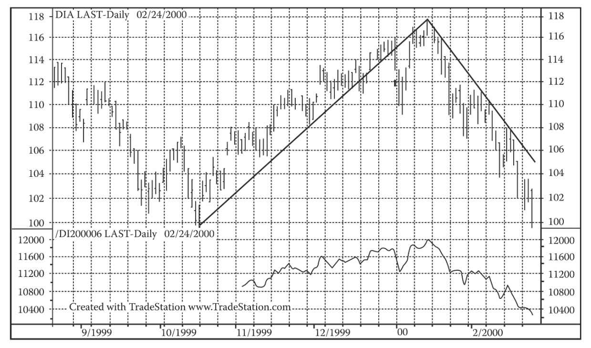
图17-3 DIAMONDS道指基金与期货。这张图上的箭头处，DIAMONDS道指基金跌穿一条11个月来的趋势线达2%以上，明确意味着应卖空期货以对冲DIAMONDS道指基金。期货空头仓位的利润可抵消DIAMONDS道指基金的亏损。通过这一方便的操作，既可保留流动性，也可递延资本利得税，还可避免资产损失。请注意价格在跌穿趋势线后出现了一次反抽
17.5.8 道指期货在投资中的应用
以下示例描述了道指期货合约的基本原理。如果预期市场未来出现波动，则可用此类合约来调整权益的风险敞口，并调整组合的资产配置。此外，期货合约还有其他的用途，本书不再赘述。为便于理解，盯市费用和持仓成本并未反映在示例中。
情形1：组合保护
如果你是迈吉派的长线投资者，长期持仓且盈利不错，但道指在临近10月份时开始出现顶部扩散（幅度约2000点），此时投资者常会面临下跌风险。你投资道指40万美元，同时在货币市场投资10万美元。在下行趋势尚不明朗的情况下，你一般只需要对资产的比例进行调整，而无需将道指组合清仓。因此，你只需卖出30万美元的指数期货，保留10万美元的道指敞口，以应对预判失误带来的损失。如果市场指数点位为10000点，期货价格为10500点，则持有成本大约为0.5%（＝10500/10000-1）。
在你卖出3份期货合约（300000/（10×10000））后，你的仓位变为10万美元道指多头、40万美元货币市场多头。
接下来的市场走势正好符合你的判断：市场开始宽幅波动，期货合约到期时，道指点位为10000点，股票持仓的回报率为-0.5%，货币市场持仓的回报率为0.5%。
以下是无对冲的组合情况：
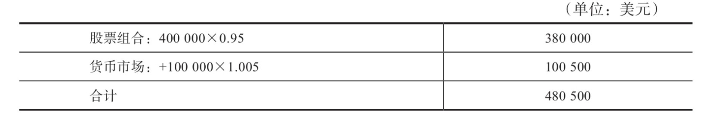
期货仓位对组合的影响：
组合配置调整后的现货价值：
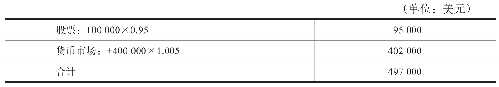
通过期货对冲，相当于持有10万美元道指敞口和40万美元货币市场敞口。股市下跌只会对10万美元的道指敞口产生影响；此外，30万美元的差额还能为你赚取0.5%的货币市场回报。
如果没有期货对冲，则组合价值变为480500美元。通过期货降低股票敞口，期货空头的利润（15000美元）抵消了30万美元道指持仓带来的损失。总而言之，卖出期货合约，可以令30万美元的组合价值免受股价下跌的影响，整个组合接近盈亏平衡，在不利的市场环境下也算不错的业绩了。如果你对市场下跌更有把握，你就可能会卖出更多期货合约，从而令股票配置更为中性，货币市场的持仓可能会增加至40万美元。对组合的保护程度取决于你对市场的判断以及风险承受能力。
情形2：通过期货增加敞口
接下来，我们讨论一个相反的策略。市场创出新高，伴有可预见的适当回调，技术分析表明牛市将持续。在10000点时，下一个高点预计在11000点。此时，你打算增加敞口，如前所述，目前组合的配置为80%道指股票和20%货币市场品种，而这次你试图做一次彻底的调仓。市场格言道：牛熊均有钱赚，唯有蠢猪被宰。
你无须清空货币市场持仓，只需买入一份期货合约，就能增加10万美元的道指敞口。货币市场的回报率为0.5%。若要将蓝筹股的敞口增加至50万美元，你可以买入1份期货合约，价格为100000（＝10×10000）美元。
然后我们看到，技术分析对市场方向的判断正确，道指期货在9月到期时上涨10%至11000点。
被动管理下的组合价值：
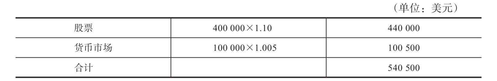
运用期货后的组合价值：
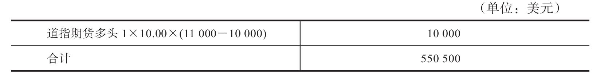
调整配置后的组合现货市场价值：
通过购买道指期货，10万美元的货币市场敞口变成了权益敞口，收益率从0.5%提升至10%。如果没有运用期货策略，那么整体组合的价值在9月时只有540500美元，而不是550500美元。除了赚取1万美元的收益，期货策略还令你无须调仓便享受到了市场上涨带来的机会。
情形3：通过债券和指数期货进行资产配置
尽管如大卫·德雷曼（David Dreman）所言，长期投资债券会带来净损失（第9版编者按：此言未免过于简化），但针对债券的投机策略却能带来丰厚的回报。因此，投资者通常会在组合中同时配置债券和股票。对此类组合进行管理时，可借助指数期货和国债期货取得良好效果。
出于谨慎，许多投资者在配置资产组合时，会考虑通胀、利率以及美联储的表态。
进行股票和债券间的配置调整时，可采用一种经济实惠的方法，即进行国债期货和道指期货的点差（spreads）交易。
例如，根据对市场中长期趋势的研究，你认为应该提高股票配置同时降低债券的比重。假设你有20万美元的道指持仓和20万美元的国债持仓，由于预测股市会持续上涨，你打算增加股票敞口至75%，同时将债券持仓降至25%。
对组合配置进行战术调整，你可以出售国债期货、买入道指期货，相当于买入10万美元股票同时卖出10万美元债券。
假设你所持有的债券市场价格为103.625美元（每100美元面值），9月到期的国债期货价格为102.625美元，每份期货合约的基础资产为10万美元的债券。道指期货合约价格为1万美元（忽略持有成本）。
要出售的国债期货份数为：100000/（102-20×1000）＝1（期货份数取整）。要买入的股指期货份数为：100000/（10.00×10000）＝1（期货份数取整）。
9月期货到期时，道指期货价值为11000美元，回报率为10%，债券市价为101.25美元，回报率为-1%。
无期货操作下的组合价值：
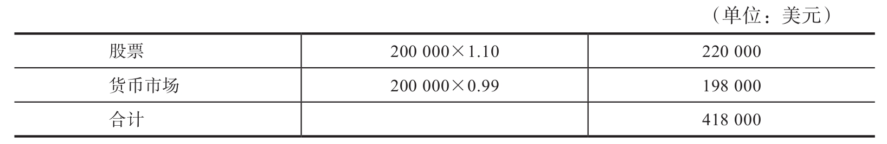
期货持仓的价值：
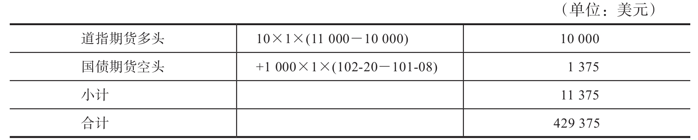
现货市场交易下的组合价值：
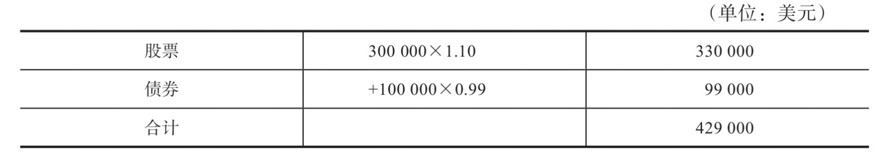
通过这一简单的操作，你可以轻松改变组合的市场敞口，并将组合价值从418000美元提升至429375美元。相比现货市场的证券买卖，期货策略减少了税务负担和烦琐的交易，在你实现组合管理目标的同时，降低了对原有组合的干扰。
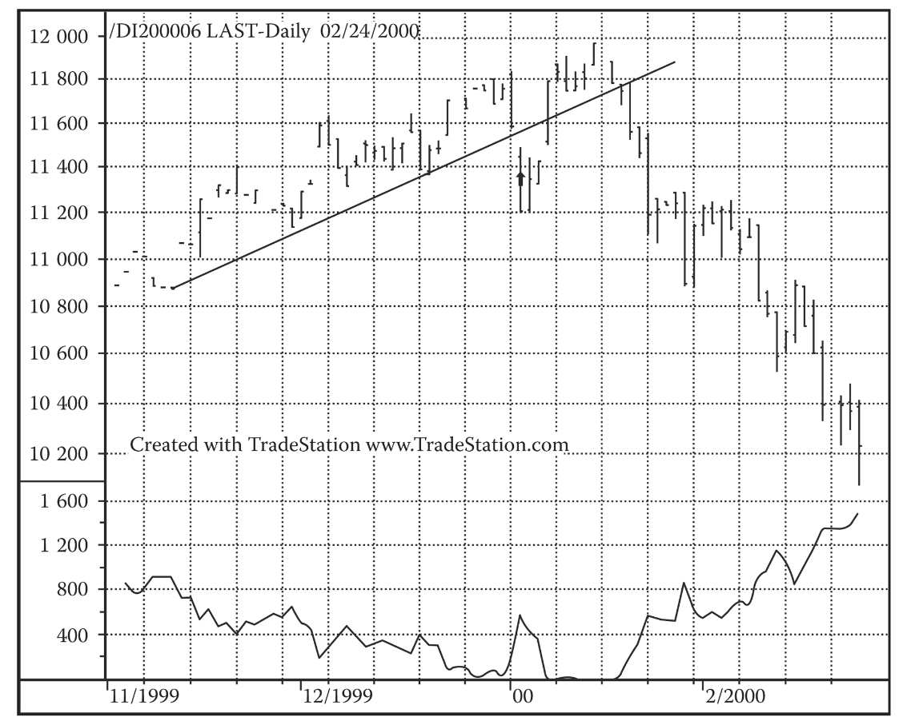
图17-4 本图展示了道指期货和期权的走势。在箭头所示反转处购买认沽期权，可以保护过去11个月累积的回报。在期货与现货走势逐步趋同并下跌的同时，认沽期权的价值逐步上升
17.5.9 我们的观点
虽然CBOT道指期货的重要性毋庸置疑，但对于期货交易新手来说，开始交易之前应做好一切准备。在高杠杆的期货市场中，犯错的成本要比在股市中高得多。同理，对如此重要的工具置之不理只能说明投资者对其组合过于草率，或对投资目标并不认真。精明的投资者应善用一切可以使用的工具。
17.5.10 道指期货期权
期权的买家拥有交割的选择权。他可以选择是否行权，这与期货交易者不同，期货交易者一旦开仓，就有交割的义务。市场上有两类期权：认购期权（买入基础资产的权利）和认沽期权（卖出基础资产的权利）。期权和期货一样，既可以买（做多），也可以卖（做空）。
如果买家做多道指期货的认购期权，那么他能够以特定的价格，即行权价，买入一份期货合约。如果买家做多道指期货的认沽期权，那么他能够以特定的价格卖出一份期货合约。例如，行权价为10000美元的认购期权能让买家在行权时以10000美元的价格做多一份期货合约；行权价为10000美元的认沽期权能让买家以10000美元的价格做空一份期货合约。道指期货期权的行权价是以100点为单位变动的，这意味着投资者可以通过交易期权表达自己对后市涨跌的预判。
认购期权或认沽期权的卖家就是做空期权的人。卖出认购期权实际上表示卖家在做空市场，而卖出认沽期权则意味着卖家在做多市场。与期货交易一样，如果买家行权，那么卖家有义务履行交割。如果你做空认购期权，且买家行权，那么你就持有了10000美元的期货合约空仓。如果你做空认沽期权，且买家行权，那么你就持有了10000美元期货合约的多头仓位。
期权买家的风险固定可控。他们在做多时，付出的代价只是一份期权费。而期权的卖家则面临无限大的风险。一旦市场出现巨幅震荡，鲁莽的期权卖家往往会陷入倾家荡产的境地。
17.5.11 期权费
期权的买入价称为期权费。期权费以点计价，每一点相当于100美元。道指期权的期权费由买家在交易开始时支付。
CBOT期货期权的基础资产是CBOT DJIA期货合约。所以，期权合约和期货合约实际上是由同一种金融产品衍生而来的，两者的基础资产都是道指。
期权费由两部分组成：内在价值和时间价值。期货价格和行权价的价差就是期权的内在价值。如果认购期权的期货价格高于行权价，该认购期权就叫“价内期权”（in-the-money）。事实上，你能够以低于期货市价的价格做多期货合约。举例来说，如果期货价格为10020点，行权价为10000点，那么该认购期权即为价内期权。如果你立即行权，那么得到的收入相当于期货价格和行权价之间的价差乘以10美元的倍数，即10×20＝200美元。如果期货价格低于行权价，该认购期权就是“价外期权”（out-of-the-money）。如果期货价格等于行权价，该认购期权就是“平价期权”（at-the-money）。对认沽期权来说，价内指的是期货价格低于行权价；价外指的是期货价格高于行权价；平价指的则是两者价格相等的情况。
因为道指期货期权可以在到期之前的任意一天行权，且行权会导致期权的内在价值以现金方式支付，所以期权价值必须至少等于其内在价值。期权价格和其内在价值的价差代表的是时间价值。时间价值表明，期货价格与行权价的价差越大，行权越有利可图。一般来说，到期日越远，期权的时间价值就越大，因为通过行权获利的可能性就越大。期权到期时，时间价值降至零，且期权价格等于其内在价值。
17.5.12 波动性
基础期货合约价格的震荡程度称为波动性（见附录B“资源”中的公式）。期货价格的波动性越大，期权费就越高。期货期权的价格包含了期货价格、行权价、到期日、货币市场利率和期货价格波动性这5个变量。其中，波动性是唯一一个无法直接观测出的变量。但由于其他变量都是已知的，我们可以从期权价格中推测出市场是如何衡量波动性的。以这种方法推测出的波动性叫作“隐含波动性”，反映的是期权到期之前，市场对于基础期货回报率波动性的平均预期。隐含波动性通常以年率表示。隐含波动性的重要性和作用对于普通投资者来说过于复杂。专业投资者在这方面享有显著优势，但普通投资者可通过认真学习来弥补这个短板。
17.5.13 行权
期权到期时，决定是否行权的规则十分简单。对认购期权买家来说，如果行权价低于基础期货价格，那么他就应该行权。认购期权的行权价值即期货价格和行权价之间的价差。同理，对认沽期权的买家来说，如果行权价高于基础期货价格，那么他就应该行权。认沽期权的行权价值也是行权价和期货价格之间的价差。
举例来说，如果即将到期的期货合约价格为7600点，那么行权价为7500点的认购期权就应该行使，而行权价低于7600点的认沽期权则不应该行使。认购期权的行权价值为1000美元，而未行权的认沽期权的价值为0。如果即将到期的期货合约价格为7500点，那么行权价为7600点的认沽期权就应该行使，而行权价等于或高于7600点的认购期权则不应该行使。认沽期权的行权价值为1000美元，而未行权的认购期权的价值为0。
做多期权的回报等于到期价值和期权费之间的价差。做空期权的回报等于到期价值加期权费。认购、认沽期权的到期价值和收入常常是投资策略的重要组成部分。期权的支付规律和风险参数与期货截然不同。期权的灵活性意味着投资者可以将其作为调节投资组合的绝佳工具，以适应人们对股市不断变化的预期。此类预期既可能是对市场走势的宏观预测，也可能是对于特定股价走势的预判。几乎每一种市场行情都有其对应的期权策略。
17.5.14 通过期货期权参与市场趋势
交易者常常要对市场中的突发事件做出反应。在短时间内买卖整个组合的股票不仅交易成本高，也会对股价产生影响，这让许多投资者放弃了短线市场行情。对普通投资者来说，卖空股票涉及保证金和高风险，所以更加不可行。
期权的灵活性可以让普通投资者快速、便捷地从短线行情中获利。如果投资者做多道指期货的认购期权，那么道指价格突破行权价之后，投资者即可获利。同理，如果投资者做多道指期货的认沽期权，那么道指价格跌破行权价后，投资者即可获利。接下来让我们仔细检视这两种策略。
17.5.15 在涨势中获利
8月，道指为10000点，而9月道指期货价格为10050点。你预计牛市会持续下去，想要顺势获利，又不想动用太多资金，还想将风险控制在一定范围内。
于是你买入9月道指期货的认购期权。这份期权会和9月道指期货同时到期，且到期时，期货价格等于道指的现货价格。
你预期牛市会持续，所以买入行权价为10500点、期权费报价为10.10点的认购期权（价外期权）是一个合理选择。你为这份认购期权一共支付了1010（＝100×10.10）美元的期权费。
你得到的好处是：9月到期时，道指期货涨到10610点。现在你的行权价低于期货价格了，所以行权后，你获得的回报等于行权价值减去期权费，即10.00×（10610-10500）-100×10.10＝1100-1010＝90美元。如果道指期货价格一直低于10500点，你就应该直接让期权过期，损失的也只有期权费。这也是认购期权可能引发的最大损失。如果道指期货价格上涨超过行权价101点，你就相当于保本了。
如果不买入认购期权，那么你可以直接投资100500美元在道指股票上。假设道指期货9月达到10110点，那么你将获利3030美元。但如果直接投资股票，而市场又反转下跌，那么你就会遭受损失。
17.5.16 从市场反转中获利
该交易者预期当前的牛市（在7800点）将要反转，故希望设置下行保护机制。
于是他买入行权价为7700点的认沽期权（价外期权）。期权费率为9.80点，总共花费980（＝100×9.80）美元。到了9月，如果指数跌至7600点，而期货合约也相应下跌，那么该认沽期权就值1000美元。如果道指期货到期时在7700点以上，那么交易者的损失就是期权费，这也是他可能遭受的最大损失。如果道指期货跌至行权价以下98点处，那么交易者不赚不亏。
17.5.17 利用认沽期权保护已升值资产组合的利润
在一段持续数日的牛市期间，投资者常会想办法保护自己的账面利润，使其不受市场下跌的影响。即使在经济基本面支持市场连续上涨的时候，投资者也要提防无法预测的“技术性调整”以及市场对负面消息的过度反应。
为了减少下行风险而抛售股票，会产生交易费用和税负，并牺牲从股票上涨中获利的机会。在横盘市况下，投资者希望既能保护组合的价值免受市场下跌的影响，又能充分参与市场的上涨。这正是认沽期权的设计初衷。
1.第1种情况
股市在8月处于涨势，但市场人士担心美联储将在未来几个月内进一步提升短期利率。该交易者持有78000美元道指组合，道指期货的价格为7800点。
为了对冲自己的组合，他购买了9月道指期货的认沽期权，行权价为7600点，期权费率为6.60点，成本为660（＝100×6.60）美元。
通过买入认沽期权，可将组合的价值下限锁定在行权价。通过买入行权价为7600点的认沽期权，交易者有效地将组合的价值下限锁定在76000美元。在行权价以上，认沽期权不会被行使，而组合的价值不受限制。如果交易者看错走势、市场上涨，那么他只损失已支付的期权费。他可通过选择行权价来增加或减少下行风险。当道指期货到达7534点（7600-66，即行权价减期权费）时，他不赚不亏，此时有保护和无保护的组合有同样的盈利。
期权和人寿保险很相似。如果你不出意外，那么保险费就打水漂了；但万一呢……
17.5.18 提升组合收益
2.第2种情况
市场并非总有明确的趋势。市场可能上下波动数日、数周、数月乃至数年，即所谓的“箱体波动”。当精明的技术派交易者发现这种情况并判断其将持续时，他可以通过卖出道指期货的认沽及认购期权赚取利润。
例如，当道指处于10000点时，该交易者判断它下一个月不会突破10200点，于是卖出行权价为10200点的认购期权。若该期权的费率为10.10点，则卖出该期权可带来1010美元的收入。
9月期货到期时，若指数仍在10200点之下，则该交易者赚得全部期权费。这笔交易的代价是，交易者放弃指数在10200点之上的利润。当指数在10200点之上时，组合的价值和卖出认购期权的期权费合计为101010美元。盈亏平衡点为10301点，此时道指期货的价值等于认购期权的行权价与期权费之和。在这个点之上，备兑认购期权组合的利润低于原来的组合。因为卖出认购期权是由组合备兑的，所以此策略没有裸认购期权（即无备兑认购期权）的风险。主要的风险在于，该交易者放弃了期货涨到期权行权价之上的潜在利润。显然，当市场呈现明确趋势时，这是一个糟糕的策略。精明的交易者只会在市场呈明显的箱体波动时卖出备兑认购期权。卖出认购期权所获的期权费是对此风险的一些补偿，但若交易者对市场判断失误，则这点补偿只是杯水车薪。该认购期权的最佳行权价取决于你对道指未来走势的判断。
17.5.19 在高波动率或低波动率的市场上运用期权价差
投资者持有多头或空头仓位，反映了其对市场的明确判断或分析。对于市场的涨跌，合格的技术派应该能比一般人看得更准一些。在蓄势待涨的市场上，有时可通过买入跨式期权策略（long straddle），从不确定性中获利。买入跨式期权策略由买入一个认沽期权（long put）和买入一个认购期权（long call）组成，两者的行权价相同。该策略的价差可在这两个市值区间中产生回报：认沽期权行权价之下的市值以及认购期权行权价之上的市值。在市场波动率足够大的情况下，这种策略有利可图。本书编辑所在的公司就在1987年股市崩盘前运用了该策略，凭借低风险仓位赚取了大笔利润。有经验的投机者和交易者往往在高波动率市场中做空，在低波动率市场中做多，原因是预期波动率会回到平均水平。有时他们通过卖出跨式期权策略（short straddle）来做到这一点，该策略由卖出一个认沽期权（short put）和卖出一个认购期权（short call）组成，两者的行权价相同。
3.第3种情况
在8月，根据技术分析，预测市场波动率将上升，市场处于蓄势过程中。股价的走向尚未明朗，但有可能出现爆发性的走势。该交易者以7800点的行权价买入一个认购期权和一个认沽期权，构成跨式期权策略。认购期权的费率报价是18.90点，认沽期权的费率报价是13.90点。该跨式期权策略的总成本是3280（＝100×32.80）美元。这是可能遭受的最大损失（当道指期货停在7800点时）。
当道指期货的波动幅度足以弥补跨式期权策略的成本时（即跌到7472＝7800-328点以下或升到8128＝7800＋328点以上），该跨式期权策略就能盈利。道指期货上涨可能带来的利润是无限的。道指期货下跌可能带来的最大利润是74720（＝10.00×（7800-328））美元，此时道指期货跌到0（这基本上不可能发生，但你永远不知道市场极度恐慌时会发生什么）。
4.第4种情况
在8月，该投资者判断期权被高估，波动率将低于期权的隐含波动率（implied volatility）。他预期市场将保持低迷状态直到夏末。于是他决定按7800点的行权价卖出9月认沽期权和认购期权，获得3280美元收入。若9月道指期货跌至7472点以下或涨至8128点以上，则这一卖出跨式期权策略的回报将变成负数。道指期货下跌可能带来的最大亏损为74720（＝10.00×（7800-328））美元，而道指期货上涨可能带来的最大亏损是无限的。然而投资者会觉得风险是有限的，因为他认为下个月期权到期时道指期货不会下跌或上涨至上述点位。在这些情况下，该交易者还必须考虑巨灾风险，例如本书编辑的客户在1987年股灾时卖出认沽期权，结果损失了5700万美元。
17.5.20 前景
（第9版编者按：再强调一次，本章所述的方法和技巧只可在具备十足把握的情况下使用。我们建议你学习期货和期权的课程，或获取专业顾问服务。）
我喜欢讲这些故事，因为它们可使交易者在看到期权可带来的潜在利润时，高度警惕可能存在的危险。初学者应先积累足够的能力与经验，然后才可尝试运用更高级的期货及期权策略。另一方面，对于愿意认真分析、获取知识、培养技能的投资者，我们建议其利用这些工具，进行审慎的套期保值。
对于一般投资者而言，道指期货和期权是保护组合、赚取利润的新手段。利用这些工具，一般投资者可以构建无数的策略。请记住，本书介绍的所有投资分析方法都是基本的原则；也就是说，投资者还必须深入了解这些工具及其用法，实施审慎的交易管理，严守止损纪律，并密切关注市场走势。
最重要的是，这些工具给最保守的投资者带来了前所未有的保险与对冲手段。
总而言之，技术派投资者与交易者确实需要了解道指期货和期权。
17.6 推荐深入学习材料
鉴于本章内容的重要性，我想推荐一些进阶学习材料，你可在附录B“资源”中找到它们。
芝加哥期权交易所（CBOE）有一个网站，上面介绍了对冲的数学原理。为了对冲一个追踪标普500指数、价值50万美元的组合，你需要4个认沽期权。http://www.cboe.com/portfoliohedge 上有关于对冲比率算法的介绍。
以下是一些有助于深入学习的资源：
·《期权投资策略》（Options as a Strategic Investment），作者劳伦斯·麦克米伦，http://www.optionstrategist.com
·芝加哥期权交易所（CBOE），http://www.cboe.com
·芝加哥期货交易所（CBOT），312-435-3558或800-THE-CBOT；312-341-3168（传真）；http://www.cbot.com
[1] 绰号“海盗大亨”，现代商业的创始人，19 世纪美国铁路和电报系统无可争议的巨头，“镀金时代”股票市场的操纵者。他在1869 年对黄金市场的狙击导致了被称为“黑色星期五”的大恐慌。—编者注
[2] 美国金融家，股票投机商。1869 年，他和古尔德企图垄断黄金市场，结果酿成9 月24 日“黑色星期五”大恐慌。—编者注
[3] 此书中文版已由机械工业出版社出版。